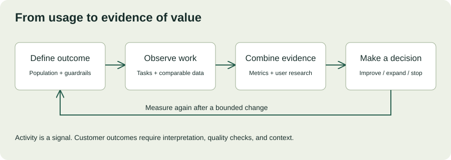

MODULE 03 · SYSTEM DESIGN & DELIVERY
Northstar’s pilot is live. The sponsor likes the demonstration, the service is stable, and dispatchers have accounts. Now comes the harder question: “Is this actually helping?” A deployed feature is an output. A customer outcome is a change in the workflow that matters to the organization and its users.
This chapter teaches you to evaluate the pilot without confusing activity with value or a before-and-after difference with proof of causation. Northstar, datasets, and thresholds are fictional training examples. All exercises run locally.
Learning objectives and deliverables
- Connect business goals to measurable workflow outcomes and guardrails.
- Define a baseline, denominator, cohort, and observation window.
- Interpret adoption alongside task success and qualitative evidence.
- Distinguish observed improvement, estimated capacity, and realized value.
- Prepare an evidence-based recommendation to improve, expand, or stop.
Allow 90–120 minutes including the workshop. Prerequisites: Chapters 8, 11, and 14. Produce a measurement contract, adoption diagnosis, and pilot evaluation memo.
15.1 Start with the customer decision
Before choosing a dashboard, name the decision its evidence must support. Northstar needs to decide whether to expand the exception-review pilot beyond the first depot. That requires understanding usefulness, reliability, workflow fit, and ongoing cost. Login counts alone cannot answer that question.
| Level | Northstar example | What it establishes |
|---|---|---|
| Output | An exception-review interface was delivered. | A capability exists. |
| Activity | Dispatchers opened the interface. | Some exposure or use occurred. |
| Workflow outcome | Eligible reviews completed with less active effort and no quality regression. | A measured change in work. |
| Business value | Operations can handle more eligible work within existing staffing. | A benefit that still requires operational verification. |
Combine quantitative measures with user research and operational evidence. The GOV.UK Service Manual recommends evaluating the whole service using more than digital analytics. Measuring the success of your service ↗
15.2 Write a measurement contract
A useful metric has a precise definition, an owner, a source, an observation window, and a known limitation. Agree on these before reviewing results, so the team cannot quietly change the denominator when the pilot disappoints.
Illustrative Northstar metric definition
Question: Does the pilot reduce active effort for eligible shipment exceptions without worsening review quality?
Population: Approved exception categories at Depot A during staffed pilot shifts. Exclude test records and document all other exclusions.
Time measure: Active handling minutes from opening a review to submitting a decision, with agreed treatment of interruptions. Report elapsed waiting separately.
Comparison: Baseline and pilot samples with category, shift, and reviewer experience recorded. Explain any differences in workload composition.
Guardrails: Correction rate, unresolved cases, unauthorized access, evidence freshness, and support burden.
Decision owner: Operations lead, with engineering validating instrumentation and the sponsor authorizing expansion.
Do not use elapsed time as a proxy for active effort without checking interruptions and parallel work. Decide how reopened, abandoned, and failed reviews enter the analysis. Dropping incomplete cases can make the tool look faster by removing the hardest work.
15.3 Make the baseline comparable
Suppose baseline reviewers handled difficult missing-scan cases while the pilot mostly handled simple delay cases. A lower pilot average could reflect that mix rather than the software. Segment by relevant categories and show counts, distributions, and missing observations. Use means for aggregate effort calculations and medians or percentiles to describe typical and tail experience; they answer different questions.
Consider other changes: new staffing, seasonal volume, training, policy updates, and the novelty of being observed. A before-and-after comparison is descriptive evidence. Stronger causal evaluation may require a suitable concurrent comparison, random assignment where feasible, or a carefully justified analysis of confounding. Do not add the word “caused” simply because the arithmetic is correct.
Plan sample collection with the analyst or measurement owner. A small, biased sample does not become representative because a dashboard displays decimal places. Keep uncertainty visible and avoid inventing confidence intervals without the underlying observations and a justified method.
15.4 Interactive outcome calculator
Explore a simple planning estimate. The model uses average active handling time, daily eligible cases, and the fraction actually handled through the pilot. It estimates gross capacity change, not financial savings, causation, or guaranteed staffing reductions.
What does the observed difference imply?
With the defaults, average handling time is 25% lower. At 240 pilot-handled cases daily, the three-minute difference implies 12 gross hours of capacity per day. Subtracting two hours of added support and rework gives an illustrative net estimate of 10 hours. These are assumptions applied to averages. Verify comparable case mix, actual use, and quality before interpreting the result as value.
Try this: raise pilot time above baseline, reduce the adoption share to zero, and increase support overhead. Explain why a feature with an attractive demo can still create negative operational value.
15.5 Adoption is a workflow, not a login
Define meaningful use for the task: an eligible review completed with the tool, rather than a page opened. Track the path from eligible work to attempted use, successful completion, and repeated use when another eligible task arises. A person without eligible work should not be labeled disengaged.

For Northstar, distinguish people-based adoption from case-based coverage. If 12 of 20 eligible dispatchers complete at least one review, that is 60% user participation over the defined window. If the tool handles 240 of 400 eligible cases, that is 60% case coverage. Identical percentages can describe different realities.
Segment by role, shift, depot, and experience only where useful and appropriate. Use operational data to improve the service, not to make unsupported judgments about individual performance. Collect the minimum data needed and agree on access and retention.
15.6 Diagnose friction before prescribing training
Low adoption may reflect missing access, stale evidence, slow interaction, unsuitable categories, duplicate data entry, poor fit with shift handoffs, or a lack of eligible work. Training helps when users do not understand a useful workflow. It cannot repair a workflow that requires unnecessary work.
Ask users to describe a recent real case and show how they handled it. Use neutral prompts: “What happened next?” and “Where did you look for that information?” Avoid asking, “How much do you love the new dashboard?” Interview guidance helps structure this investigation. Using in-depth interviews ↗
Observe representative tasks without coaching participants toward your preferred path. A successful task completed only after repeated hints is different from independent success. Moderated usability testing can reveal where users misunderstand the interface or cannot finish a task. Using moderated usability testing ↗
Adoption diagnosis
Dispatchers log in but switch back to spreadsheets when reviewing missing scans. What is the strongest next step?
15.7 Turn findings into a small experiment
Suppose observations reveal that the pilot hides the latest scan location behind several clicks. Write a hypothesis: “Making the verified latest scan visible in the review panel will reduce navigation effort for missing-scan cases without increasing incorrect decisions.” Define the change, population, measures, guardrails, owner, and stop conditions.
Prefer a bounded improvement you can evaluate over a large redesign that changes everything at once. Keep source timestamps visible and test whether the new presentation causes users to overtrust stale evidence. Record what would count as a useful result and what would cause reversal.
Maintain a feedback log that separates observation, interpretation, and proposed action. “Three observed users searched another system for scan location” is an observation. “The panel lacks useful context” is an interpretation. “Show the verified scan location” is a proposal. Each needs a different kind of evidence.
15.8 Report value with its limits
A sponsor needs a clear recommendation, not a dump of charts. State the decision, key findings, limitations, risks, and next validation step. Distinguish time capacity from cash savings: available time becomes financial value only through an actual operational change or demonstrated avoided cost. Include implementation, support, training, and ongoing costs when evaluating economics.
“The pilot sample shows lower average handling time for the measured categories, while case coverage remains uneven. We have not isolated the tool’s effect from changes in case mix, and correction data is incomplete. We recommend a targeted usability improvement and a further comparable measurement window before approving broader rollout.”
This fictional statement is less dramatic than a guaranteed savings claim, but it enables a better decision. Include negative findings. If the workflow is not improving, stopping or narrowing the deployment can be the right customer outcome.
15.9 Pilot evaluation workshop
Scenario: Northstar reports a mean handling-time drop from 12 to 9 minutes across 80 baseline cases and 60 pilot cases. The baseline contains 50% missing-scan cases; the pilot contains 10%. Only 12 of 20 eligible dispatchers completed a review. Correction data is missing for half the pilot sample. Support consumed two hours daily. The sponsor asks for a slide claiming “25% productivity improvement” and approval to expand.
Spend 25–35 minutes writing a one-page evaluation memo. State what is observed, what is unknown, why the requested claim overreaches, and what evidence would support a next decision. Propose an adoption investigation and a bounded improvement experiment.
Worked response outline
Report the 25% lower sample mean as a descriptive result, not a causal productivity claim. Explain the case-mix mismatch and missing correction data. Separate 60% dispatcher participation from unknown case coverage. Recover or characterize missing quality evidence, compare like-for-like categories, and observe the spreadsheet fallback. Propose a small interface experiment with quality guardrails. Recommend a further evaluation gate rather than unconditional expansion, and name the operations and measurement owners.
| Rubric | Points |
|---|---|
| Metric definitions and correct arithmetic | 20 |
| Comparability, missingness, and uncertainty | 25 |
| Adoption diagnosis and qualitative evidence | 20 |
| Quality, support cost, and value interpretation | 20 |
| Clear recommendation and next decision gate | 15 |
15.10 Verified reading and application
Primary-source pages checked October 25, 2026. Apply the methods to your customer context rather than importing a metric without a definition.
- Measuring the success of your service — combine a workflow measure with operational and qualitative evidence.
- Using in-depth interviews — draft neutral questions about a recent task.
- Using moderated usability testing — create a realistic task without revealing the intended path.
15.11 Knowledge check
15.12 Completion check
You can now explain whether users are achieving the intended outcome, which evidence supports that conclusion, and what remains uncertain. Good FDE work continues after launch: observe the workflow, improve it, and make expansion conditional on demonstrated value.
Field notes
Which metric in your current work measures activity when you really need an outcome?